전자기사 (2015-03-08 기출문제)
1과목: 전기자기학
1. 평행판 콘덴서의 극간 전압이 일정한 상태에서 극간에 공기가 있을 때의 흡인력을 F1, 극판 사이에 극판 간격의 2/3 두께의 유리판(εr=10)을 삽입할 때의 흡인력을 F2라 하면 F2/F1는?
- 0.6
- 0.8
- 1.5
- 2.5
(정답률: 66%)

2. 유전율 ε1, ε2인 두 유전체 경계면에서 전계가 경계면에 수직일 때 경계면에 작용하는 힘은 몇 [N/m2]인가? (단, ε1 > ε2이다.)
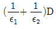
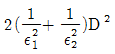
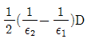
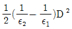
(정답률: 73%)
3. 진공 중에 +20μC과 -3.2μC인 2개의 점전하가 1.2m 간격으로 놓여 있을 때 두 전하 사이에 작용하는 힘(N)과 작용력은 어떻게 되는가?
- 0.2N, 반발력
- 0.2N, 흡인력
- 0.4N, 반발력
- 0.4N, 흡인력
(정답률: 81%)
4. Ωㆍsec 와 같은 단위는?
- F
- F/m
- H
- H/m
(정답률: 67%)
5. 진공 중에 있는 반지름 α(m)인 도체구의 정전용량(F)은?
- 4πε0α
- 2πε0α
- aε0α
- a
(정답률: 69%)
6. 내부도체의 반지름이 a(m)이고, 외부도체의 내반지름이 b(m), 외반지름이 c(m)인 동축 케이블의 단위 길이당 자기 인덕턴스는 몇 H/m인가?
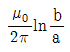
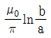
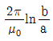
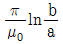
(정답률: 58%)
7. 균일한 자속밀도 B중에 자기모멘트 m의 지삭(관성모멘트 I)이 있다. 이 자석을 미소 진동시켰을 때의 주기는?
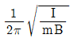
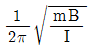
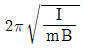
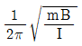
(정답률: 70%)
8. 60[Hz]의 교류 발전기의 회전자가 자속밀도 0.15[Wb/m2]의 자기장 내에서 회전하고 있다. 만일 코일의 면적이 2×10-2[m2]일 때 유도기전력이 최대값 Em=220[V]가 되려면 코일을 약 몇 번 감아야 하는가? (단, ω=2πf=377[rad/sec]이다.)
- 195회
- 220회
- 395회
- 440회
(정답률: 72%)
9. 무한장 선로에 균일하게 전하가 분포된 경우 선로로부터 r(m) 떨어진 P점에서의 전계의 세기 E(V/m)는 얼마인가?(단, 선전하 밀도는 ρL(C/m)이다.)
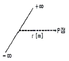
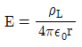
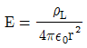
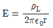
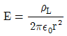
(정답률: 68%)
10. 0.2C의 점전하가 전계 E=5ay+az(V/m) 및 자속밀도 E=2ay+5az(Wb/m2) 내로 속도 v=2ax+3ay(m/s)로 이동할 때 점전하에 작용하는 힘 F(N)은? (단, ax, ay, az는 단위 벡터이다.)
- 2ax-ay+3az
- 3ax-ay+az
- ax+ay-2az
- 5ax+ay-3az
(정답률: 67%)
11. 반지름이 5[mm]인 구리선에 10[A]의 전류가 흐르고 있을 때 단위시간당 구리선의 단면을 통과하는 전자의개수는? (단, 전자의 전하량 e=1.602×10-19[C]이다.)
- 6.24×1017
- 6.24×1019
- 1.28×1021
- 1.28×1023
(정답률: 57%)
12. 투자율을 μ라 하고 공기 중의 투자율 μ0와 비투자율 μs의 관계에서
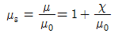
로 표현된다. 이에 대한 설명으로 알맞은 것은?(단, χ는 자화율이다.)- χ＞0인 경우 역자성체
- χ＜0인 경우 상자성체
- μs＞1인 경우 비자성체
- μs＜1인 경우 역자성체
(정답률: 76%)
13. 자계의 벡터포텐셜을 A라 할 때 자계의 변화에 의하여 생기는 전계의 세기 E는?
- E=rotA
- rotE=A
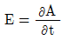
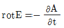
(정답률: 74%)
14. 공기 중에서 x방향으로 진행하는 전자파가 있다. Ey=3×10-2sinω(x-vt)(V/m), Ez=4×10-2sinω(x-vt)(V/m)일 때 포인팅 벡터의 크기(W/m2)는?
- 6.63×10-6sin2ω(x-vt)
- 6.63×10-6cos2ω(x-vt)
- 6.63×10-4sinω(x-vt)
- 6.63×10-4cosω(x-vt)
(정답률: 42%)
15. 자계의 세기 H=xyay-xzaz(A/m)일 때 점(2, 3, 5)에서 전류밀도는 몇 [A/m2]인가?
- 3ax+5ay
- 3ay+5az
- 5ax+3az
- 5ay+3az
(정답률: 44%)
16. 회로에서 단자 a-b 간에 V의 전위차를 인가할 때 C1의 에너지는?
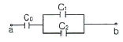
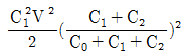
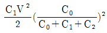
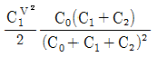
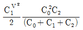
(정답률: 63%)
17. Qℓ=±200πЄ0×103(Cㆍm)인 전기쌍극자에서 ℓ과 r의 사이 각이 π/3이고, r=1m인 점의 전위(V)는?
- 50π×104
- 50×103
- 25×103
- 5π×104
(정답률: 58%)
18. 전속밀도에 대한 설명으로 가장 옳은 것은?
- 전속은 스칼라량이기 때문에 전속밀도도 스칼라량이다.
- 전속밀도는 전계의 세기의 방향과 반대 방향이다.
- 전속밀도는 유전체 내에 분극의 세기와 같다.
- 전속밀도는 유전체와 관계없이 크기는 일정하다.
(정답률: 64%)
19. 와전류와 관련된 설명으로 틀린 것은?
- 단위체적당 와류손의 단위는 W/m3이다.
- 와전류는 교번자속의 주파수와 최대자속밀도에 비례한다.
- 와전류손은 히스테리시스손과 함께 철손이다.
- 와전류손을 감소시키기 위하여 성층철심을 사용한다.
(정답률: 47%)
20. 무한장 직선도체가 있다. 이 도체로부터 수직으로 0.1m 떨어진 점의 자계의 세기가 180AT/m이다. 이 도체로부터 수직으로 0.3m 떨어진 점의 자계의 세기(AT/m)는?
- 20
- 60
- 180
- 540
(정답률: 58%)
2과목: 회로이론
21. 이상 변압기의 조건으로 옳은 것은?
- 와류 손실은 약간 있다.
- 동손, 철손은 약간 있다.
- 두 코일간의 결합계수가 1이다.
- 각 코일의 인덕턴스는 ∞가 아니다.
(정답률: 79%)
22. 리액턴스 함수가
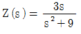
로 표시되는 리액턴스 2단자망은?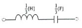
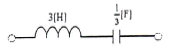
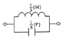
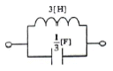
(정답률: 53%)
23. 회로의 영상 임피던스 Z01은 약 얼마인가?
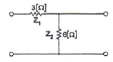
- 4.1[Ω]
- 5.2[Ω]
- 6.3[Ω]
- 7.4[Ω]
(정답률: 67%)
24. 다음 그림의 교류 회로에서 R에 전류가 흐르지 않기 위한 조건으로 옳은 것은?
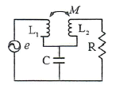
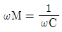
- ωM=ωL2
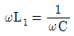
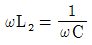
(정답률: 58%)
25. f(t)=sint cost 를 라플라스 변환 하면?
- 1/(S2+2)
- 1/(S2+4)
- 1/((S+2)2)
- 1/((S+4)2)
(정답률: 49%)
26. 한 코일의 전류가 매초 60[A]의 비율로 변화할 때 다른 코일에는 30[V]의 기전력이 발생하는 경우에 두 코일의 상호 인덕턴스[H]는?
- 2
- 1.5
- 1
- 0.5
(정답률: 52%)
27. h 파라미터 중 단락 순방향 전류 이득은?
- h11
- h21
- h12
- h22
(정답률: 55%)
28. R=8[Ω], XL=8[Ω], XC=2[Ω]인 R-L-C 직렬회로에 정현파 전압 V=100[V]를 인가할 때 흐르는 전류는?
- 10[A]
- 20[A]
- 30[A]
- 40[A]
(정답률: 63%)
29. 고유저항 ρ, 반지름 r, 길이 ℓ인 전선의 저항이 R일 때, 같은 재료로 반지름은 m배, 길이는 n배로 하면 저항은 몇 배가 되는가?
- m2/n
- m/n
- n/m
- n/m2
(정답률: 63%)
30. 시간 a만큼 옮겨진 그림과 같은 단위 계단 함수를 라플라스 변환하면?
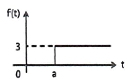
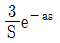
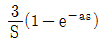
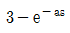
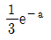
(정답률: 55%)
31. 2개 이상의 전원을 내포한 선형 회로에서 어떤 가지에 흐르는 전류나 단자의 전압을 해석하는데 사용하는 것은?
- 중첩의 원리
- 치환정리
- Thevenin의 정리
- Norton의 정리
(정답률: 64%)
32.
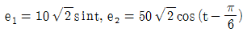
일 때 e1+e2의 실효치는 약 얼마인가?(오류 신고가 접수된 문제입니다. 반드시 정답과 해설을 확인하시기 바랍니다.)- √4400
- √3900
- √3100
- √2900
(정답률: 39%)
33. 그림과 같은 파형을 실수 푸리에 급수로 전개할 때 다음에서 옳은 것은?
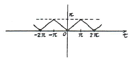
- sin항, cos항을 쓰면 유한항으로 전개된다.
- sin항, cos항 모두 있다.
- cos항은 없다.
- sin항은 없다.
(정답률: 56%)
34. 다음 회로망의 합성 저항은?
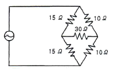
- 6[Ω]
- 12[Ω]
- 30[Ω]
- 50[Ω]
(정답률: 70%)
35. 두 회로 간에 쌍대 관계가 옳지 않은 것은?
- KㆍVㆍL → KㆍCㆍL
- 테브난 정리 → 노튼 정리
- 전압원 → 전류원
- 폐로전류 → 절점전류
(정답률: 72%)
36. 기본파의 10[%]인 제3고조파와 20[%]인 제5고조파를 포함하는 전압파의 왜형률은 약 얼마인가?
- 0.5
- 0.42
- 0.31
- 0.22
(정답률: 58%)
37. 회로에 60+j80[V]인 전압을 인가하여 4+j1[A] 전류가 흐를 때 소비되는 유효전력은?
- 140[W]
- 320[W]
- 480[W]
- 500[W]
(정답률: 49%)
38. RC 직렬회로에서 직류전압을 인가할 때 전류값이 초기값의 e-2배가 되는 시간[s]은?
- 2RC
- RC
- C/R
- 1/RC
(정답률: 58%)
39. 그림의 T형 4단자 회로에 대한 전송 파라미터 D는?
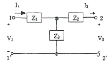
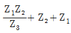
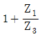
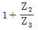
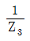
(정답률: 57%)
40. 100[μF]의 콘덴서에 100[V], 60[Hz]의 교류전압을 가할 때 무효전력은?
- -40π[Var]
- -60π[Var]
- -120π[Var]
- -240π[Var]
(정답률: 76%)
3과목: 전자회로
41. 다음 회로에서 VCE는 약 몇 [V]인가? (단, βDC는 100이다.)
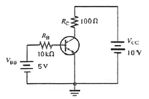
- 3.4
- 5.7
- 6.2
- 7.6
(정답률: 68%)
42. 전가산기를 반가산기 몇 개와 어떤 논리 게이트 몇 개로 구성하는 것이 가장 적당한가?
- 반가산기 2개, AND 게이트 1개
- 반가산기 2개, OR 게이트 2개
- 반가산기 3개, OR 게이트 1개
- 반가산기 2개, OR 게이트 1개
(정답률: 73%)
43. R-L-C 병렬 공진회로에서 선택도(Q)를 높게 하려면?
- R 값을 크게 한다.
- R 값을 작게 한다.
- C 값을 작게 한다.
- L 값을 크게 한다.
(정답률: 57%)
44. QAM(직교진폭변조) 방식에 대한 설명으로 옳은 것은?
- FSK 변조방식의 일종이다.
- AM 변조방식과 FSK 변조방식을 혼합한 것이다.
- FSK 변조방식과 PSK 변조방식을 혼합한 것이다.
- 정보신호에 따라 반송파의 진폭과 위상을 변화시키는 APK 변조방식의 한 종류이다.
(정답률: 62%)
45. 짧은 ON 시간과 긴 OFF 시간을 가지며 펄스신호를 사용하는 증폭기회로에서 주로 쓰이는 증폭기는?
- A급
- B급
- C급
- D급
(정답률: 54%)
46. 이상적인 연산 증폭기에서 입력 바이어스 전류에 대해 옳은 것은?
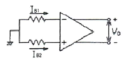
- V0 = 0일 때 (IB1 + IB2) / 2
- V0 = ∞일 때 (IB1 + IB2) / 2
- V0 = 0일 때 (IB1 + IB2)
- V0 = ∞일 때 (IB1 + IB2)
(정답률: 57%)
47. 정류회로에서 전압 안정계수가 0.01일 때 정전압회로의 입력 전압이 ±5[V] 변화하면 출력 전압은?
- ±40[mV]
- ±50[mV]
- ±60[mV]
- ±70[mV]
(정답률: 70%)
48. 트랜지스터를 베이스 접지에서 이미터 접지로 해서 ICEO가 50배가 되었을 때 트랜지스터의 β는?
- 49
- 50
- 59
- 120
(정답률: 54%)
49. 압전현상을 이용하여 안정도가 높은 발진주파수를 얻는 발진기는?
- VCO
- 빈브리지 발진기
- 수정 발진기
- hartley 발진기
(정답률: 67%)
50. 위상천이(이동)형 RC 발진기에 대한 설명으로 옳은 것은?
- 펄스 발진기로 많이 사용된다.
- 100[MHz]대의 높은 주파수 발진용으로 적합하다.
- 발진을 계속하기 위해서 증폭도는 29보다 작아야 한다.
- 병렬 저항형 이상형 발진기의 발진주파수는 1/2π√RC[Hz]이다.
(정답률: 54%)
51. 부귀환 입력임피던스 변화에 대한 설명으로 틀린것은?(오류 신고가 접수된 문제입니다. 반드시 정답과 해설을 확인하시기 바랍니다.)
- 전류 병렬 귀환시 입력임피던스는 감소한다.
- 전류 직렬 귀환시 입력임피던스는 감소한다.
- 전압 병렬 귀환시 입력임피던스는 감소한다.
- 전압 직렬 귀환시 입력임피던스는 감소한다.
(정답률: 38%)
52. 다음 회로의 명칭으로 가장 적합한 것은?
- 평형 변조회로
- 전파 정류회로
- 배전압 정류회로
- 반파 정류회로
(정답률: 63%)
53. 2진 디지털 부호의 정보 내용에 따라 반송파의 위상을 두 가지로 천이되도록 하는 변조방식은?
- FSK 방식
- PSK 방식
- ASK 방식
- QAM 방식
(정답률: 59%)
54. B급 푸시풀(Push-Pull) 증폭기의 특징이 아닌 것은?
- 트랜지스터의 비선형 특성에서 오는 일그러짐이 증가한다.
- 우수 고조파가 상쇄되어 일그러짐이 적다.
- 차단 상태 부근에 바이어스 되어 있다.
- 컬렉터 효율이 높다.
(정답률: 66%)
55. 교류전압에 직류전압을 더하는 것으로 직류 복원기(DC Restorer)라고 하는 회로는?
- 클램퍼
- 제너제한
- 리미터
- 체배기
(정답률: 70%)
56. 다음 회로는 어떤 회로인가?
- 전류귀환 증폭회로
- 전압귀환 증폭회로
- 임피던스귀환 증폭회로
- 어드미턴스귀환 증폭회로
(정답률: 41%)
57. J-K 플립플롭의 J와 K 입력단자를 하나로 묶어 놓은 플립플롭으로 1을 인가하면 출력이 토글되는 플립플롭은?
- RS 플립플롭
- D 플립플롭
- T 플립플롭
- RS 마스터 슬레이브 플립플롭
(정답률: 68%)
58. 연산증폭기의 일반적인 특징에 대한 설명으로 옳은 것은?
- 주파수 대역폭이 좁다.
- 입력 임피던스가 낮다.
- 동상신호제거비가 크다.
- 온도변화에 따른 드리프트가 크다.
(정답률: 57%)
59. FET의 핀치오프(Pinch off) 전압에 대한 설명으로 틀린 것은?
- 불순물 농도에 비례한다.
- 채널 폭의 자승에 비례한다.
- 캐리어(Carrier)의 전하량에 반비례한다.
- 채널(Channel)이 완전히 막히는 상태에 이르는 전압이다.
(정답률: 30%)
60. 다음 회로는 βDC=100이고, RC=1[kΩ], RE=470[Ω]인 트랜지스터의 베이스에서 바라본 직류 입력저항은?
- 1[kΩ]
- 47[kΩ]
- 100[kΩ]
- 470[kΩ]
(정답률: 63%)
4과목: 물리전자공학
61. 페르미 준위에 대한 설명으로 틀린 것은?
- T=0[K]가 아닌 경우 전자의 존재 확률은 50%가 된다.
- 0[K]에서 전자의 최고 에너지가 된다.
- 0[K]에서 n형 반도체의 경우 전도대와 도너준위 사이에 위치한다.
- 진성 반도체의 경우 온도와 무관하게 전도대에 위치한다.
(정답률: 50%)
62. 순방향 전압이 걸린 PN 접합(부)의 특성을 설명한 것으로 옳지 않은 것은?
- 접합부의 저항은 외부 전압에 따라 변한다.
- 접합부의 저항은 전류에 반비례한다.
- 접합부의 저항은 온도와 무관하다.
- 접합부에는 전압이 생긴다.
(정답률: 63%)
63. 어떤 광자가 물질을 통과한 후 2537Å 및 4078Å의 두 광자로 분리되었을 때, 원래 조사한 빛의 파장은?
- 1270Å
- 1564Å
- 2040Å
- 6615Å
(정답률: 56%)
64. 트랜지스터의 증폭회로에서 안정도(stability factor)는? (단, IC는 컬렉터 전류, IB는 베이스 전류, ICD는 컬렉터 역포화 전류)
(정답률: 50%)
65. 트랜지스터의 전류이득 α를 크게 하는 조건으로 틀린 것은?
- 베이스폭을 좁게 한다.
- 이미터의 도핑(doping)을 베이스의 도핑보다 크게 한다.
- 캐리어의 수명을 길게 한다.
- 이미터 전류를 크게 한다.
(정답률: 47%)
66. 정상 바이어스를 가한 npn 트랜지스터에서 컬렉터 접합에 흐르는 주된 전류는?
- 확산 전류
- 드리프트 전류
- 정공 전류
- 베이스 전류와 같다.
(정답률: 60%)
67. 금속내부의 자유전자에 에너지를 공급하면 금속 밖으로 튀어나오는 현상이 아닌 것은?
- 열전자방출
- 광전자방출
- 전계방출
- 저항방출
(정답률: 62%)
68. 터널(tunnel) 다이오드에 대한 설명으로 틀린것은?
- 음성 저항(Negative resistance) 특성을 가진다.
- N형 반도체의 페르미 준위는 금지대 내에 존재한다.
- P형 반도체의 페르미 준위는 가전자대 내에 존재한다.
- 능동소자로서 발진기로 사용한다.
(정답률: 48%)
69. 페르미-디랙(Fermi-Dirac) 분포에 대한 설명이 틀린 것은?
- 고체 내의 전자는 Pauli의 배타원리의 지배를 받는다.
- 대부분의 전자는 페르미 준위 이상의 에너지 역에 존재한다.
- 분포형태는 금속의 온도에 변화한다.
- 도체가 가열될 때 전자는 분자 비열 용량에 거의 영향을 주지 못한다.
(정답률: 40%)
70. 직경 4[mm]인 동선에 4[A]의 전류가 흐르고 있을 때 전자의 평균이동속도는? (단, n=8.2×1023[개/cm3], e=1.602×10-19[C])
- 2.43[μm/s]
- 4.66[μm/s]
- 6.43[μm/s]
- 8.66[μm/s]
(정답률: 42%)
71. PN 접합에 순바이어스(forward-bias)를 가할 때 공핍층의 폭은 무바이어스 시 보다 어떠한가?
- 변함이 없다.
- 좁아진다.
- 넓어진다.
- 넓어지기도 하고 좁아지기도 한다.
(정답률: 68%)
72. 반도체(semiconductor)에 대한 설명으로 옳은 것은?
- 홀(hole)의 이동도는 자유전자의 이동도보다 작다.
- 게르마늄(Ge)에 비소(As)를 첨가시키면 P형 반도체가 된다.
- P형 반도체는 정공보다는 자유전자가 더 많다.
- 온도를 증가시키면 저항은 증가한다.
(정답률: 40%)
73. MOSFET의 구조와 동작원리에 대한 설명으로 옳은 것은?
- n채널 MOSFET의 단면구조는 드레인-소스간 p형 반도체의 기판 위에 절연체를 붙이고, 그 위에금속단자를 붙여 게이트 단자를 만든다.
- n채널 MOSFET의 동작원리는 게이트 단자에 문턱전압 이상의 (+) 전압을 인가하면 MOSFET 드레인-소스 사이는 2개의 역방향 다이오드와 같은 등가회로를 갖는다.
- p채널 MOSFET의 단면구조는 p형 반도체 기판(Substrate)에 2개의 p+형 반도체를 형성시킨다.
- n채널 MOSFET의 단면구조는 n형 반도체 기판(Substrate)에 2개의 p+형 반도체를 형성시킨다.
(정답률: 54%)
74. 피에조 저항(piezo resistance)은?
- 압력 변화에 의한 저항의 변화이다.
- 자계 변화에 의한 저항의 변화이다.
- 온도 변화에 의한 저항의 변화이다.
- 광전류 변화에 의한 저항의 변화이다.
(정답률: 64%)
75. 도체, 반도체, 절연체의 에너지 대역에 관한 설명으로 틀린 것은?
- 도체는 전도대와 가전자대가 중첩되었다.
- 반도체의 금지대역폭이 절연체보다 작다.
- 도체의 금지대역폭이 반도체보다 작다.
- 반도체는 금지대역폭이 5eV 이상이다.
(정답률: 59%)
76. 컬렉터 접합부의 온도 상승으로 인하여 트랜지스터가 파괴되는 현상은?
- 얼리 현상
- 항복 현상
- 열폭주 현상
- 펀치 스로우 현상
(정답률: 60%)
77. 실리콘 n형 반도체에 관한 설명으로 옳은 것은?
- 불순물은 3개의 가전자 만을 갖는다.
- 억셉터(acceptor) 불순물을 첨가하여 제작한다.
- 정공은 소수 캐리어이다.
- 진성 반동체이다.
(정답률: 49%)
78. 초전도 현상에 대한 설명으로 틀린 것은?
- 초전도체는 완전도체의 성질을 갖는다.
- 초전도체는 완전 반자성체의 성질을 갖는다.
- 초전도 상태에 있는 물질 내에서는 전계가 0이다.
- 초전도체를 관통하는 자속의 시간적 변화는 완전히 주기적이다.
(정답률: 50%)
79. 광속도의 1/5의 속도로 운동하고 있는 전자의 드브로이(de Broglie) 파장은? (단, h=6.6×10-34[Jㆍsec], 전자의 질량 m=9.1×10-31[kg], 광속도 c=3×108[m/sec])
- 2.3×10-13[m]
- 2.3×10-11[m]
- 1.2×10-13[m]
- 1.2×10-11[m]
(정답률: 46%)
80. 반도체의 전도에 관한 설명으로 틀린 것은?
- 반도체의 저항은 온도의 증가에 따라 감소한다.
- 캐리어의 이동도는 온도와 결정구조의 규칙성에 따라 변한다.
- 절대온도 0[K]에서 모든 가전자는 전도대에 존재한다.
- 자유전자가 정공과 결합하는 과정을 재결합이라 한다.
(정답률: 48%)
5과목: 전자계산기일반
81. C 언어 중 모든 면에서 구조체와 같으며 선언문법이나 사용하는 방법이 같은 것은?
- constant
- array
- union
- pointer
(정답률: 57%)
82. 주소지정 방식 중에서 반드시 누산기를 필요로 하는 방식은?
- 3-주소지정 방식
- 2-주소지정 방식
- 1-주소지정 방식
- 0-주소지정 방식
(정답률: 58%)
83. 명령어의 형식에 대한 설명 중 옳지 않은 것은?
- 3-주소 명령어 형식은 3개의 자료 필드를 갖고 있다.
- 2-주소 명령어 형식에서는 연산 후에도 원래 입력 자료가 항상 보존된다.
- 1-주소 명령어 형식에서는 연산 결과가 항상 누산기(accumulator)에 기억된다.
- 0-주소 명령어 형식을 사용하는 컴퓨터는 일반적으로 스택(stack)을 갖고 있다.
(정답률: 45%)
84. 2진수 (1110.0111)2를 16진수로 옳게 바꾼 것은?
- (7.7)16
- (14.14)16
- (E.7)16
- (E.E)16
(정답률: 77%)
85. 다음 프로그램 작성 과정을 순서대로 올바르게 나열한 것은?
- ㉣ → ㉠ → ㉡ → ㉢ → ㉤
- ㉣ → ㉠ → ㉡ → ㉤ → ㉢
- ㉠ → ㉣ → ㉡ → ㉢ → ㉤
- ㉠ → ㉡ → ㉤ → ㉢ → ㉣
(정답률: 45%)
86. 원시 프로그램을 목적 프로그램으로 바꾸어 주기억장치에 저장하기까지의 실행과정으로 옳은 것은?
- 컴파일러 → 로더 → 링커
- 링커 → 컴파일러 → 로더
- 링커 → 로더 → 컴파일러
- 컴파일러 → 링커 → 로더
(정답률: 29%)
87. 10진수 13을 그레이 코드(Gray code)로 변환하면?
- 1001
- 0100
- 1100
- 1011
(정답률: 66%)
88. 컴퓨터 확장슬롯에 연결되는 PCI 신호 중에서 현재 지정된 어드레스가 디코딩되어 접근이 가능한지를 나타내는 신호는?
- LOCK
- STOP
- IDSEL
- TRDY
(정답률: 73%)
89. 그림과 같은 회로의 명칭은?
- 반가산기
- 전가산기
- 전감산기
- parity checker
(정답률: 61%)
90. 프로그램이 수행되는 도중에 인터럽트가 발생되면 현 사이클의 일을 끝내고 프로그램이 수행될 수 있도록 현주소를 지시하는 것은?
- 상태 레지스터
- 프로그램 레지스터
- 스택 포인터
- 인덱스 레지스터
(정답률: 63%)
91. 서브루틴 호출시 필요한 자료 구조는?
- 환형 큐(circular queue)
- 다중 큐(multi queue)
- 스택(stack)
- 트리(tree)
(정답률: 71%)
92. 논리회로를 설계하는 과정에서 최적화를 위한 고려 대상이 아닌 것은?
- 전파 지연신가의 최소화
- 사용 게이트 수의 최소화
- 게이트 종류의 다양화
- 게이트 간 상호변수의 최소화
(정답률: 77%)
93. 16비트로 나타낼 수 있는 정수의 범위는?
- -216 ~ 216
- -216-1 ~ 216+1
- -215 ~ 215
- -215 ~ 215-1
(정답률: 40%)
94. 콘솔(console)이나 보조기억장치에서 마이크로프로그램이 로드(load)되는 기법은?
- dynamic micro-programming
- static micro-programming
- horizontal micro-programming
- vertical micro-programming
(정답률: 47%)
95. 소프트웨어적으로 인터럽트의 우선순위를 결정하는 인터럽트 형식은?
- 벡터 방식에 의한 인터럽트
- 슈퍼바이저 콜에 의한 인터럽트
- 데이지체인 방법에 의한 인터럽트
- 폴링 방법에 의한 인터럽트
(정답률: 70%)
96. 메모리 장치와 주변 장치 사이에서 데이터의 입출력 전송이 직접 이루어지는 것은?
- DMA
- MIMO
- UART
- MIPS
(정답률: 62%)
97. 컴퓨터가 직접 해독할 수 있는 2진 숫자(binary digit)로 나타낸 언어는?
- 기계어(machine language)
- 컴파일러 언어(compiler language)
- 어셈블리 언어(assembly language)
- 기호식 언어(symbolic language)
(정답률: 49%)
98. 전기신호에 의하여 자료를 기록하고, 삭제할 수 있는 ROM은?
- MASK ROM
- PROM
- EEPROM
- EPROM
(정답률: 59%)
99. 10110과 01111을 exclusive-OR 하였을 때의 결과는?
- 00111
- 00110
- 11000
- 11001
(정답률: 69%)
100. CPU의 수행 상태를 나타내는 주 상태(Major State) 중에서 메모리로부터 실행하기 위한 다음 명령의 번지를 결정한 후 메모리로부터 명령을 CPU로 읽어 들이는 동작은?
- Fetch 상태
- Indirect 상태
- Execute 상태
- Interrupt 상태
(정답률: 50%)
흡인력은 전압의 제곱에 비례하므로, F2/F1 = (3/10)2 = 9/100 = 0.09이다. 하지만 문제에서는 보기가 소수점 이하까지 주어지지 않았으므로, 간단하게 정수로 표현하면 2.5가 된다.